:טעימה קטנה מחיי המתכנתים
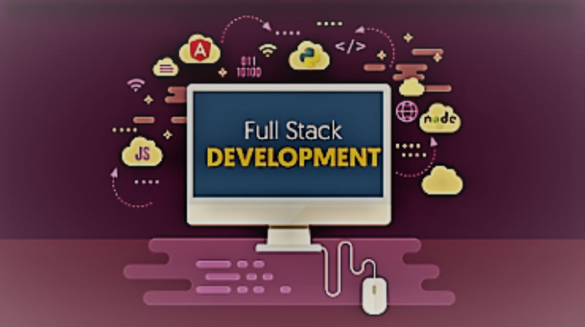 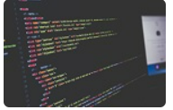
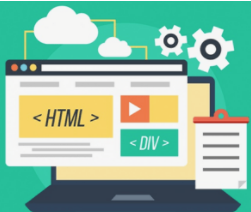
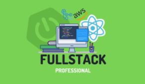
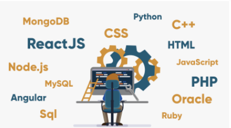
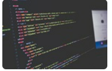
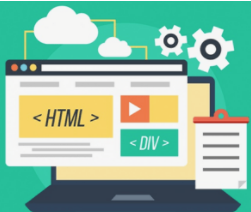
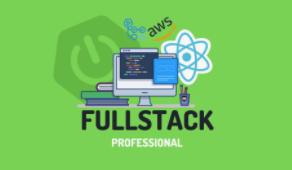
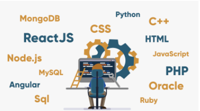


בשנים האחרונות אנחנו שומעים הרבה את המושג “פול סטאק” אבל רבים מאיתנו לא מבינים מה זה full stack,
מה המשמעות של המושג ולמה הוא כל כך חשוב ונדרש בעולם ההייטק של היום.
למעשה, אנשים שהם מפתחי full stack הם אנשים חיוניים מאוד בארגון הייטק, כאלו שמרוויחים לא מעט ויש להם ידע והבנה רבים ומגוונים.
כדי להבין לעומק מה זה Full-Stack, צריך קודם כל להבין שני מושגים הקשורים אליו – צד השרת וצד הלקוח.
פיתוח צד שרת
פיתוח צד שרת הוא פיתוח של כל הפעולות המתבצעות “מאחורי הקלעים”, כלומר כל מה שלקוח הקצה לא רואה בעיניים.
מה זה אומר? לדוגמה, אחסון הנתונים שמתקבלים על ידי הלקוח, עיבוד המידע, ניהול משתמשים וכדומה.
פיתוח צד שרת הוא חלק חשוב מאוד בבנייה של כל מוצר טכנולוגי.
פיתוח צד שרת נעשה פעמים רבות באמצעות הפלטפורמה Node.JS וכן באמצעות פלטפורמות נוספות כמו Python או PHP.
פיתוח צד לקוח
בצד השני עומד פיתוח צד לקוח.
במקרה הזה, מדובר על מה שהלקוח רואה בעיניים כשהוא משתמש במוצר/אפליקציה/אתר – מה קורה על המסך של המשתמש, וכיצד הוא יוצר אינטראקציה עם מה שקורה על המסך.
פיתוח צד לקוח הוא כמובן חשוב מאוד לחווית המשתמש.
מפתחי צד לקוח אלו אנשים המשלבים את העיצוב עם הפונקציונליות ויוצרים את האתר הויזואלי.
פיתוח צד לקוח נעשה פעמים רבות באמצעות טכנולוגיות כמו JavaScript, Angular או HTML.
אז מה זה Full Stack? העולם שמחבר בין צד שרת לצד לקוח
עכשיו כשהבנו את שני המושגים האלו, זה הזמן לענות על השאלה מה זה Full Stack.
מפתחי Full Stack הם אנשים שמכירים את הטכנולוגיות משני צדי המתרס – גם צד לקוח וגם צד שרת, וכן את התקשורת והקשר ביניהם.
אנשים כאלו הם אנשים עם ראייה רחבה על כל התהליכים החשובים לבניית האתר או האפליקציה.
יש להם הבנה הן בחווית משתמש, עיצוב ובניית אתרים, והן ביצירת מסד נתונים וכל הפעולות הנדרשות מאחורי הקלעים.
בקיצור, אם אתם רוצים תשובה קצרה לשאלה מה זה Full Stack, אז הנה היא: אדם שיכול לפתח מוצר סופי באופן מקיף,
כי יש לו את כל הידע הטכנולוגי לשם זה!
ככל שמפתח Full Stack בעל ידע ביותר שפות, פלטפורמות פיתוח וטכנולוגיות, כך הערך שלו הולך וגדל בשוק העבודה, וכך גם השכר שלו וההתקדמות שלו בעולם ההייטק.
חשוב לציין שאין הכוונה כי המפתח עושה את שתי העבודות, גם של הלקוח וגם של השרת; אבל זה כן אומר שהוא יכול לעשות את שתי העבודות.
כלומר, יש לו את כל הידע הנדרש, ולכן הוא יכול לקפוץ לכל משימה ולפתור בעיות רבות הקשורות לקשר בין השניים.
פעמים רבות מפתח כזה יושם בתפקידים ניהוליים כמו מנהל הפרויקט, שכן יש לו ראייה רחבה והבנה עמוקה.
איך הופכים למפתחי Full Stack?
באופן טבעי, תחום ה-Full stack הוא תחום נדרש מאוד, שכן אדם שהוא מפתח full stack הוא בעל ידע בטכנולוגיות רבות, יש לו ראייה רוחבית והוא חשוב מאוד לארגון, וארגונים מחפשים בנרות אנשים כאלו.
אנשים רבים המגיעים מעולם צד הלקוח או צד השרת רוצים לעשות את הקפיצה לעולם ה-full stack, להתחמש בידע נוסף ולהפוך לאנשים חשובים בארגון, עם משכורות גבוהות ותנאי עבודה מדהימים.
כדי לעשות זאת, יש להכיר לפחות שפה אחת בתחום הנוגד לזה שכבר מכירים, ולנסות להשתלב בפרויקט המשלב את שני הצדדים.
אין צורך להתפטר מהעבודה הנוכחית ולהתחיל משרה בתחום הנגדי, אלא להראות לאלו שמעליכם שאתם מוכנים לקחת על עצמכם אחריות נוספת וללמוד טכנולוגיות ושפות נוספות
.
אבל זאת לא הדרך היחידה להגיע לתחום ה-full stack, ותתפלאו לשמוע שלא חייבת להיות היכרות מוקדמת עם עולם השרת או הלקוח.
היום, ישנם קורסים שונים במכללות הייטק שמנגישים את כל המידע הזה, מבלי הצורך ברקע טכנולוגי קודם.
בקורס כזה, תלמדו בדרך כלל טכנולוגיה אחת המשויכת לתחום הלקוח ואחת לתחום השרת, ותלמדו כיצד לחבר בין שני הצדדים בצורה אופטימלית.
אם אתם מחפשים להשתלב במשרה מרתקת, רוחבית וחשובה, אין ספק שמשרת פיתוח full stack היא הדרך הנכונה.
| שם | טלפון | דוא"ל |
| אפרת ילין | 0527643014 | efratyellin014@gmail.com |
| אורית ריטר | 052719079 | raiter.orit@gmail.com |
| מירה וינגרטן | 0583269778 | m96778@gmail.com |
| אביגיל שפיץ | 0583250930 | AVIGAIL.SHPIT@gmail.com |
| שני הרשוביץ | 0583263015 | s.h058@gmail.com |
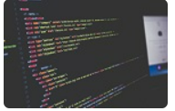
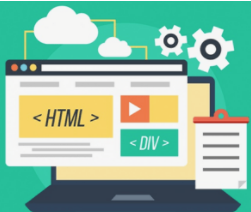
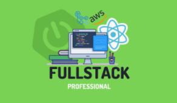
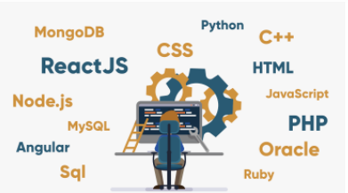